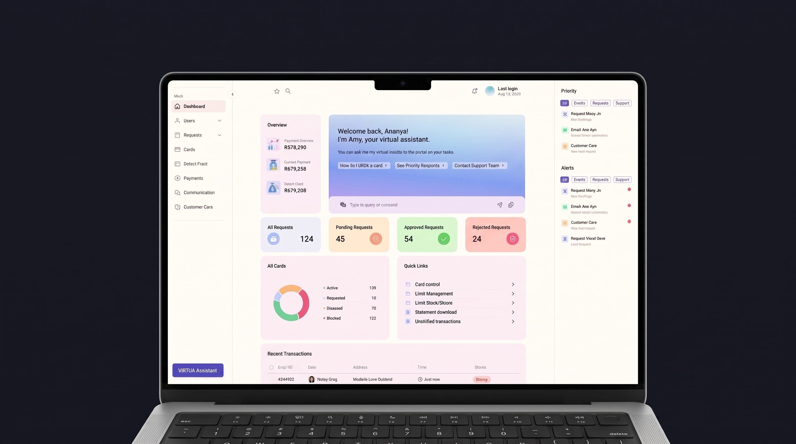
Commercial Cards Portal — Reimagining Support, Trust, and Control for Corporate Banking
Overview
Carried out over 12 weeks as part of my UX internship at HDFC Bank, under the guidance of Senior UX Designers and a Design Manager.
A corporate finance manager shouldn't need a two-hour phone call to change a cardholder's limit. A travelling sales executive stuck at an airport at 11 PM shouldn't hear "call back during business hours." But that's exactly what commercial card portals were asking of their users — enterprise-grade stakes, running on consumer-grade patience.
I spent this project figuring out why that gap exists and what closes it. Not by guessing — by benchmarking ten-plus banks across two very different markets, sitting with real users, and following the evidence to a conclusion I didn't expect going in: the fix wasn't a smarter dashboard or a prettier statement. It was support — rebuilt around speed, visibility, and control, the three things users kept describing without ever using those words.
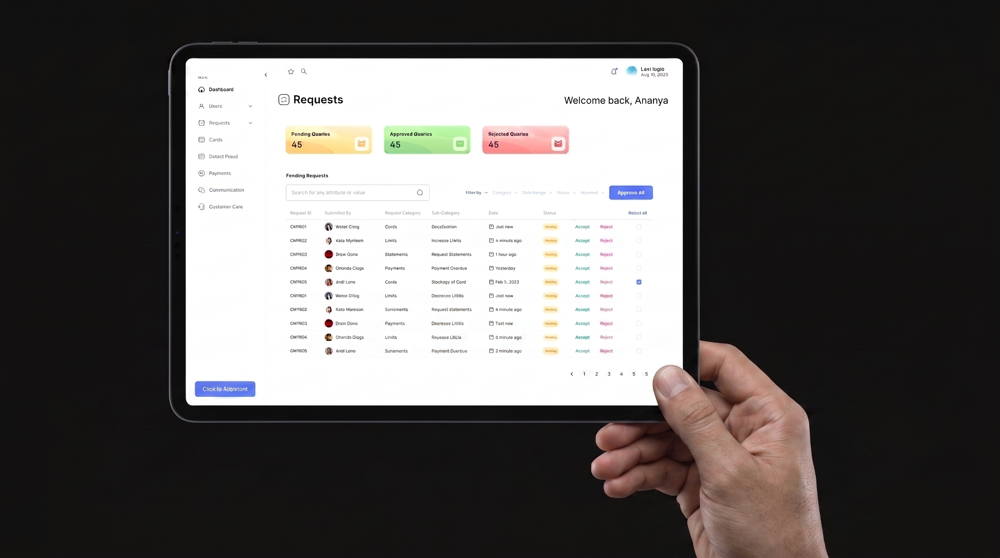
Objective
Analyze current industry trends and competitor offerings to ideate and design innovative, user-centric features for a commercial cards portal, delivering actionable recommendations for future enhancements.
Process
Secondary research first, to understand the category. Then competitive benchmarking — both enterprise banking and consumer fintech, on purpose, since one moves faster than the other. Then real user data: interviews, journey mapping, a UI audit. Only after all of that: empathize, ideate, design.
Competitor Analysis
I started where any serious teardown should — with the banks already doing this at scale. Six of them: SBI, American Express, HSBC, Citi Bank, ICICI, and Bank of America.
Three things showed up in every single one, which told me they weren't differentiators — they were the entry fee. Past the baseline, the interesting work was happening in two directions: enterprise features that made heavy workflows lighter, and consumer-fintech patterns that had been slowly raising the bar on what "good" looks like, even for corporate users.
I didn't stop at enterprise banking, and this is the part that actually shaped the direction of the project. Commercial cards feel outdated for a simple reason — consumer fintech has been sprinting for a decade, and enterprise banking hasn't been chasing it. So I ran the same benchmark against the consumer side: SBI, American Express, HSBC, Citi Bank, ICICI, Bank of America, Barclays, CRED, and Union Bank, among others.
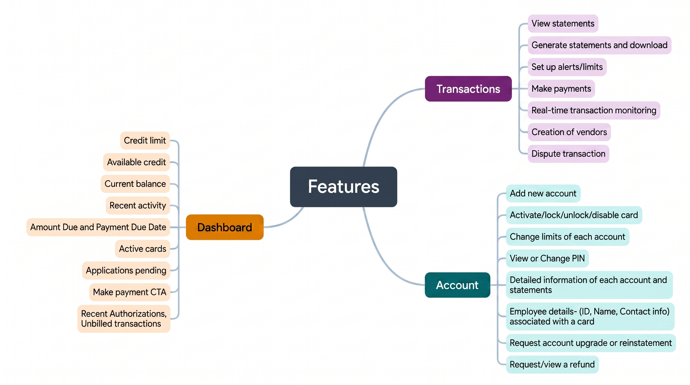
The baseline, mapped out before I went looking for what actually sets these portals apart.
Two things stood out immediately, and one of them ended up mattering more than anything else in this project. First: CRED and Bank of America were the only two actually turning trust into a reward. Second, and this is the thread I kept pulling: Bank of America's virtual assistant and always-on support model kept showing up as the bar nobody else was clearing. I didn't know it yet, but that observation would end up defining the entire solution.
| Feature | Bank / Brand | Segment | What it does |
|---|---|---|---|
| Dashboard | — | Common | Credit limits, available credit, current balance, recent activity, payment due dates |
| Accounts Management | — | Common | Active cards, card settings, pending applications, payments, PIN changes, employee details, statements |
| Transactions | — | Common | Statement generation, alerts/limits, payments, real-time monitoring, vendor creation, dispute resolution |
| Business Travel Account (BTA) | American Express | B2B Standout | A cardless account travelers use to bill air and rail charges directly |
| Secure File Upload | American Express | B2B Standout | Upload files into back-office systems, with file-locking for added control |
| Pinned Accounts | American Express | B2B Standout | Favorite frequently-used accounts for instant access, cutting search time |
| Aging of Balance | Citi Bank | B2B Standout | Tracks outstanding balances by age (30/60/90 days) to manage cash flow |
| Business Travel Reports | American Express | B2B Standout | Summarizes travel and entertainment expenses for management review |
| Financial Management | HSBC | B2B Standout | Detailed budgeting/planning data, useful for supplier negotiations |
| Key Nicknames | Bank of America | B2B Standout | User-friendly names for account identifiers, instead of memorizing codes |
| Custom Fields | Bank of America | B2B Standout | Lets companies tailor fields to their own internal terminology |
| Goal Setting for Savings | Bank of America | B2C Standout | Set and auto-fund personalized savings goals |
| Split Bills | American Express | B2C Standout | Split payments with contacts, still earning rewards on the full amount |
| Reward-Driven System | CRED | B2C Standout | Cashback, CRED Points, and redeemable vouchers |
| Exclusivity Perks | CRED | B2C Standout | Rewards creditworthiness with CRED cash, no documentation needed |
| Transaction Map View | Barclaycard | B2C Standout | View payment locations on a map, by geography |
| Map View for Offers | American Express | B2C Standout | Discover nearby deals via an interactive map |
| Budgeting Tools | Bank of America | B2C Standout | Monitor spending, set budgets, view trend reports |
| Round-Up Savings | Ally | B2C Standout | Rounds up purchases to the nearest dollar, saves the difference |
| Simple Support Page | American Express | B2C Standout | One clear page for calls, FAQs, and feedback |
| Scheduled ATM Withdrawals | Bank of America | B2C Standout | Set up a withdrawal in advance for a chosen time/date |
| International Currency Orders | Bank of America | B2C Standout | Order foreign currency, delivered or picked up |
| Custom Cash Orders | Bank of America | B2C Standout | Order exact denominations and quantities of cash |
| Virtual Assistant | Bank of America | B2C Standout | In-app security meter plus a guided virtual assistant |
| Scheduled Payments | Barclaycard | B2C Standout | Set payments to occur automatically at a future date |
| Scam Alert Pop-Ups | Barclaycard | B2C Standout | Flags suspicious payments with a "could this be a scam?" prompt |
| Payment Categorization | Barclaycard | B2C Standout | Tag payments by type (family, investment, shopping) for clarity |
Information Architecture Study
Cataloguing features answers what a portal can do. It says nothing about how a person finds any of it. So I studied the IA of every competitor I'd just benchmarked — not casually, but mapped in detail, admin view and cardholder view separately, because they're not the same job and shouldn't be organized like they are.
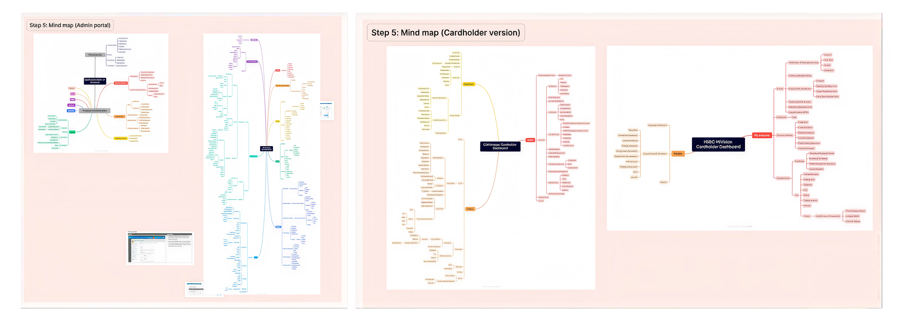
Same underlying data, two completely different structures — depending on who's actually looking at the screen.
Mind Mapping Good-to-Have Features
With every good idea from both benchmarks on the table, I mind-mapped the full set — every "good-to-have," no filtering yet, across Accounts, Approvals, Reports, Statements, Rewards, Business Travel, and Security. Deliberately wide, before anything got narrowed down.
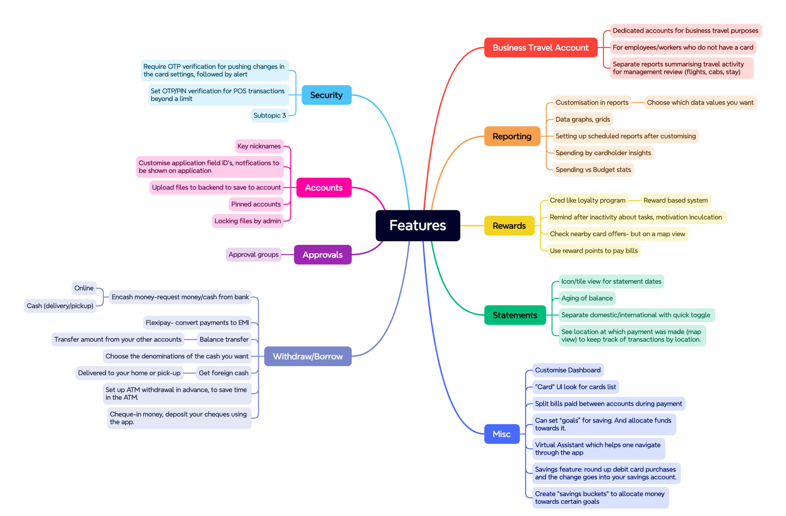
Every candidate feature from both benchmarks, sorted into the categories that would later become the sitemap.
User Interview Findings
Research tells you what's possible. Users tell you what's actually broken. Four things came up again and again, almost word for word across interviews:
- Support was the biggest source of frustration, full stop. People described 2–3 hour ordeals just to change cardholder details or push through an approval — worse, with zero coverage outside business hours or on bank holidays.
- Approvals stalled constantly. Once initiated, they'd just sit. Users called this out unprompted as one of the most frustrating parts of the entire experience.
- Nobody felt in control. The system made people dependent on support for things they should have been able to handle themselves.
- And the Bank of America comparison stung. Users brought it up on their own — BoA's round-the-clock support made everyone else's version feel like a downgrade.
Personas
Meera Sharma — Corporate Finance Manager, 38, Bengaluru
Runs financial operations across multiple departments — budgets, transactions, compliance — but loses hours every week to routine approvals.
- Self-service tools to cut dependency on support
- A dedicated, fast-response support channel
- One dashboard with real-time transaction data
- Can't adjust limits or manage cardholders without contacting support
- Approvals stall further on holidays, with no 24/7 coverage
- Report discrepancies mean repeat support requests
"I need faster and more efficient approval processes to keep our financial operations running smoothly. Reducing our dependency on customer support for routine tasks would greatly enhance our productivity."
Rohan Mehta — Sales Executive, 29, Mumbai
Travels constantly for client meetings and deals, managing a company card for flights, hotels, and entertainment along the way.
- Manage his card independently while on the move
- 24/7 support with fast response during travel
- Integrated expense tracking without extra steps
- Can't adjust card settings or limits while travelling
- Losing a card mid-trip means a slow, disruptive replacement process
- Support lags further across time zones, right when issues are most urgent
"I need efficient tools to manage my card independently while traveling. Quick and reliable support is crucial for resolving any issues that arise, so I can focus on my business tasks without disruptions."
User Journey Mapping
I traced the day of two different people using the same portal — the admin managing it, and the cardholding employee actually travelling. Same system, completely different lived experience.
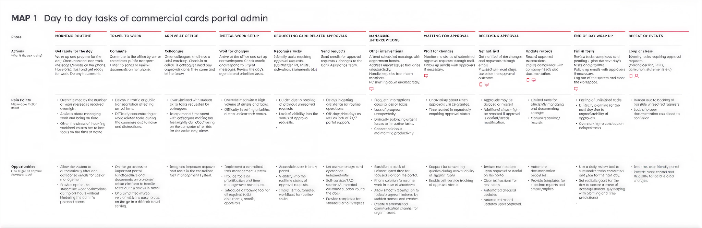
A full day for the admin, morning routine to end-of-day wrap-up. The pain points repeat almost hourly: buried under messages, no visibility into where an approval stands, nothing available outside office hours. The opportunities repeat just as often — automate the documentation, let people self-serve the routine stuff, give them one place to track it all.
Bucketting
I engaged participants in a bucketing exercise to understand their mental models — how they'd naturally group and prioritize the portal's content and functionality, rather than how the bank had structured it.
| No. | User Question |
|---|---|
| 1 | Activate, deactivate, or apply for a new card |
| 2 | Avoid missing urgent alerts during off-hours |
| 3 | Manage high email/task volume without feeling overwhelmed |
| 4 | Navigate the portal clearly and efficiently |
| 5 | Access one streamlined channel for all support communication |
| 6 | Track every email, request, approval, and notification in one place |
| 7 | Protect focused, uninterrupted work time |
| 8 | Stay aware of urgent requests without delaying other users |
| No. | User Question |
|---|---|
| 1 | Raise a request for approval |
| 2 | Find relevant data quickly within large transaction statements |
| 3 | Settle payments and catch overdue items before deadlines |
| No. | User Question |
|---|---|
| 1 | Customize the dashboard to surface only what matters to the organization |
| No. | User Question |
|---|---|
| 1 | View and edit account details |
| 2 | Adjust a cardholder's limit up or down |
| 3 | Block a card immediately if a cardholder loses it |
| 4 | Send and track approvals across user accounts |
| 5 | Update personal account details easily |
| 6 | Create and manage roles for all portal users |
| No. | User Question |
|---|---|
| 1 | Support travelling employees with urgent card issues |
| 2 | Reach the Relationship Manager quickly, with a record of the conversation |
| 3 | Resolve issues via the FAQ knowledge base when support isn't available |
| 4 | Get fast support of any kind, whenever needed |
| 5 | Send queries to support through simplified channels |
| 6 | Track the status of a support request after sending it |
Findings
Everything converged on the same handful of problems, from three completely different research methods. That's usually the signal you've found the real issue, not a symptom of it.
Delays after every initiation, no exceptions.
No self-service transaction history, requiring users to email for it.
No support coverage round-the-clock while competitors offer exactly that.
No flexibility or help available to portal users outside standard business hours.
Almost all banking operations are routed back through a manual human queue.
Users want flexible, direct access to statements and card settings.
Portal actions must be fast, highly accessible, and resolved quickly.
High email volume and no clear portal statuses make prioritization difficult.
Approvals are delayed or missed with zero visibility into status or denial reasons.
Travelling employees hit dead ends outside domestic office hours, threatening plans.
No institution-specific highlighting, burying important data in the UI.
Even simple and routine portal problems require outside administrative help.
Final Insights
The research highlighted three primary challenges: limited customer support hours causing delays in issue resolution, the absence of a streamlined workflow leading to inefficiencies and mental strain, and the lack of a streamlined request system resulting in delayed responses and missed critical approvals. These issues collectively impact user satisfaction and workflow efficiency.
Customer Care Frustrations
Users experience delays in resolving issues due to limited customer support hours and non-availability of round-the-clock assistance, which can lead to frustration and hampering of urgent tasks.
Lack of Streamlined Workflow
Users face uncertainty and delays due to a lack of real-time notifications for approval statuses due to manual tracking of approvals over various channels like Emails, Calls and Web Portal, which can lead to confusion, inefficiency and mental load.
Inefficient Request Handling
Portal admins are unable to differentiate urgent requests and approvals from routine ones due to a lack of information hierarchy and streamlined request system, which can lead to delayed response times, missed critical approvals, and inefficient workflow management.
Design Brief
Design an innovative commercial cards portal that greatly improves the user experience by addressing current challenges, including issues with customer care support and the need for effective self-service options. The portal should streamline portal management and handle requests efficiently, ensuring a seamless and user-friendly experience for all stakeholders.
Ideation
Three keywords came straight out of the research: 24/7 support, tracking, urgent requests. I didn't need more than that. This wasn't a feature-prioritization problem — support was the single biggest gap between this portal and what people actually wanted from it.
- An AI virtual assistant running on NLP and voice recognition, handling queries automatically.
- A knowledge base built on video and images, not flat FAQ text.
- An in-portal ticketing channel with push notifications and chat history, so nothing lives in someone's inbox.
- An IVR hotline with automated call summaries feeding a CRM.
- Templated emails for the repetitive stuff.
- A visual task list that just says what to do next.
- Calendar sync through the Google Calendar API.
- Progress bars and milestone badges under one tracking tab instead of scattered across three tools.
- Multi-channel alerts — SMS, email, in-portal — before anything becomes urgent.
- An ML engine that actually triages incoming requests by criteria, keywords, and sender profile.
- Automatic escalation if something sits too long.
- A dashboard that surfaces priority in real time, with Slack and CRM integrations built in.
Every one of these maps directly back to a pain point that came out of the interviews:
| Pain Point | Design Response |
|---|---|
| Approval Wait-Times — delays after initiation | ML-driven triage, automated escalation, real-time dashboard alerts bypassing manual backlogs |
| Dependency on Support — no self-service transaction history | Centralized tracking tab, customizable widgets, self-service account logs |
| Desire for 24/7 Support — BoA sets the bar | NLP virtual assistant paired with a comprehensive knowledge base |
| Off-Hours Support Gap — nothing outside business hours | Non-human channel automation — in-portal ticketing, automated IVR, email triggers |
Sitemap and Information Architecture
Eight sections, each one earning its place from the research above, not from convention:
User Flows
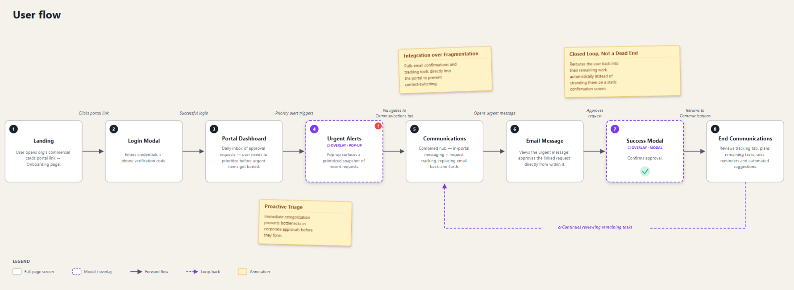
Concepts and Wireframes
Paper first — two rounds of sketches, tested against the sitemap and IA before anything got locked in. Then digital wireframes, several layouts per screen, kept only what actually served the user, not what looked cleanest on a grid.
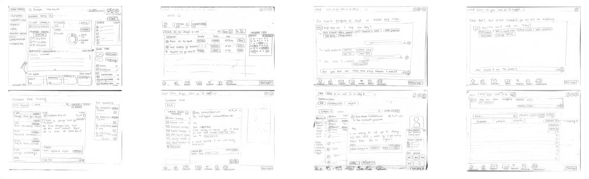
Visual Design & Prototype
Color and type had one job: feel like enterprise banking without feeling cold. Here's where that landed, screen by screen.
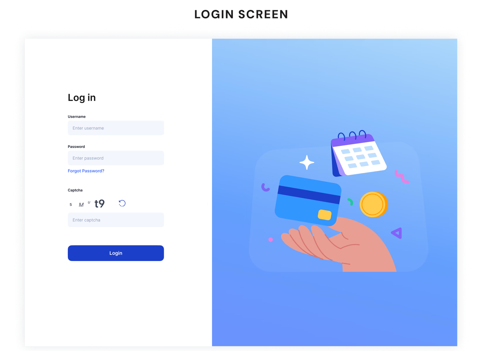
Entering the portal: a clean, secure entry point combining credential input and dual-factor Captcha validation.

One navigation bar to every tab, widgets surfacing what actually matters to the institution, priority alerts kept separate so urgent never gets lost in routine, and the assistant available from anywhere on the page.
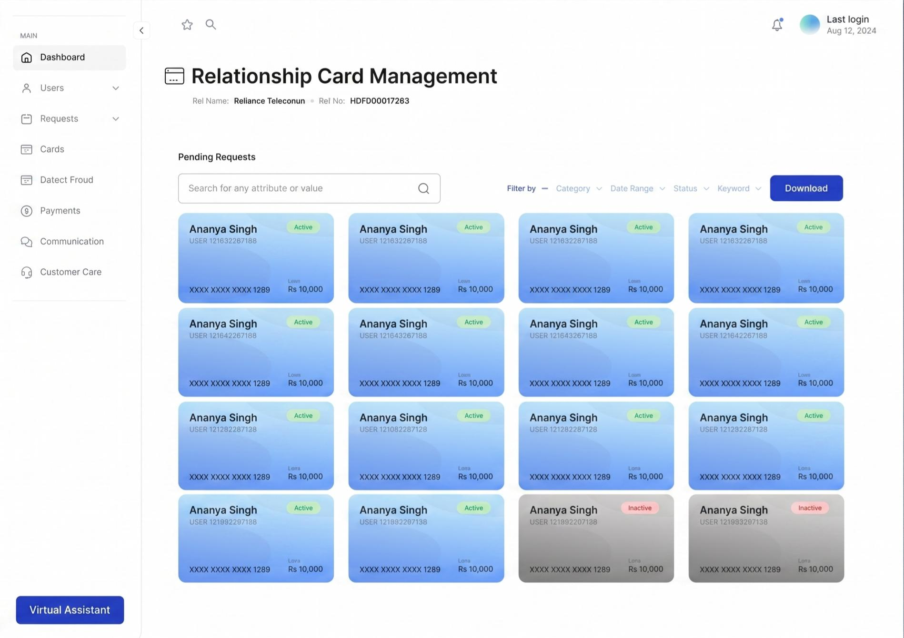
Cards rendered as cards — a visual format built specifically so scanning a huge list stays fast.
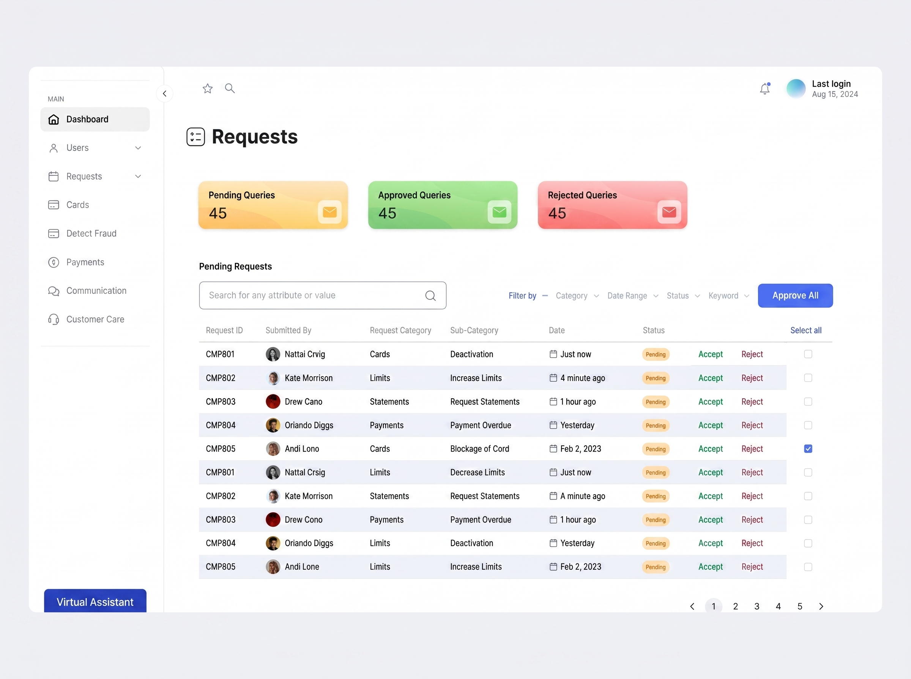
Toggle between Pending, Approved, Rejected. Approve All for the batch work, Accept/Reject per row for everything else — no repetitive navigation required.
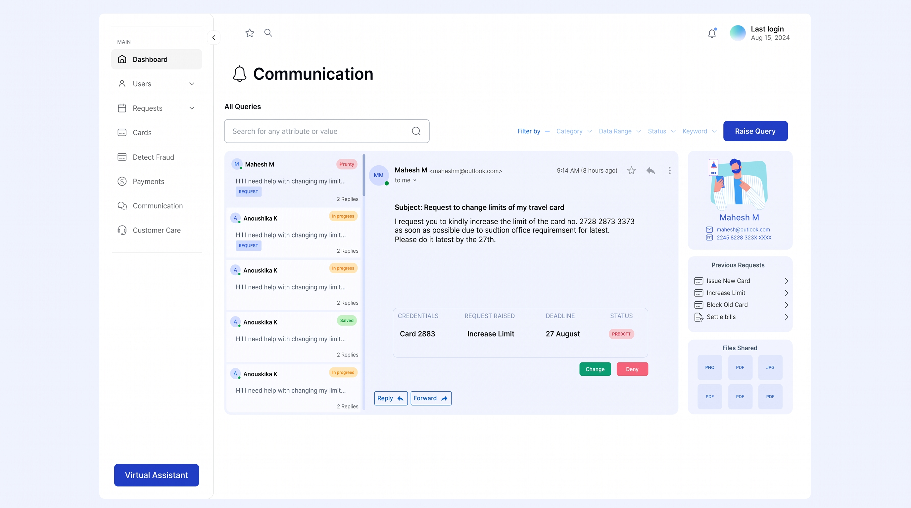
Familiar email format, status chips so nobody has to open a thread just to check where it stands, and requests attachable directly to a message so nothing needs a second trip.
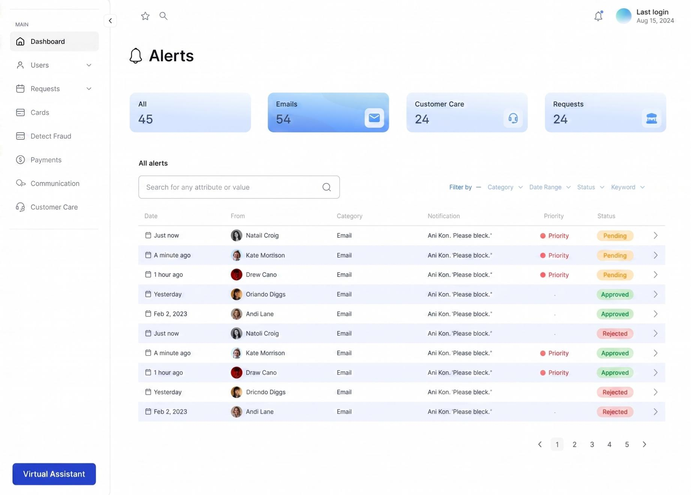
Accessible from anywhere, toggled by category, with priority tags doing the work of separating urgent from routine at a glance.
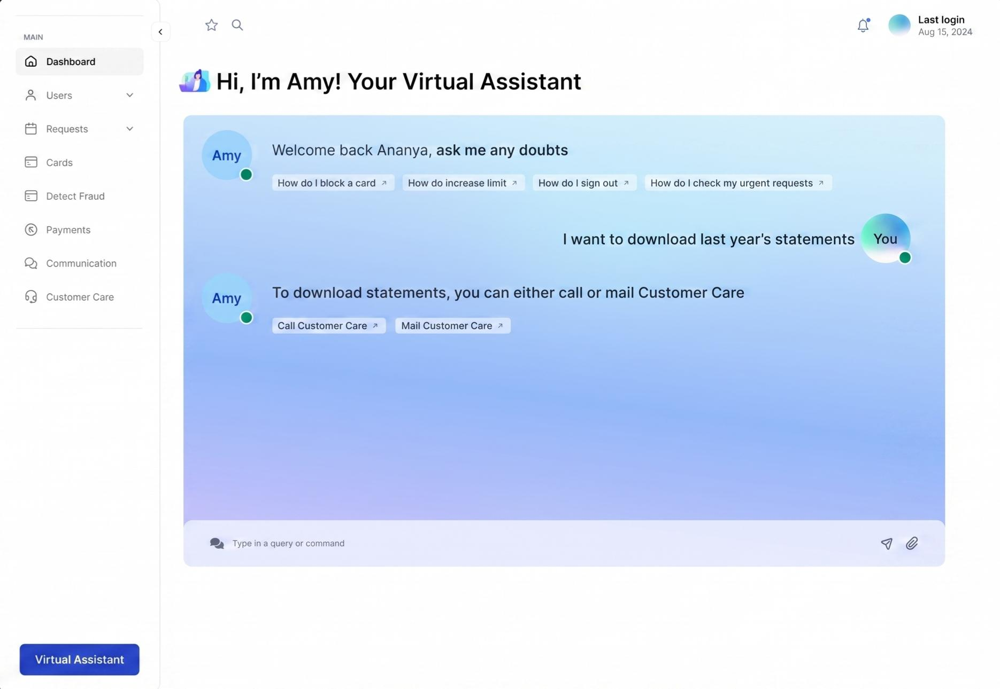
Amy opens with suggested questions and every reply carries its own next-step prompt — this is the 24/7-support gap, closed.
Reflection
I went in expecting a features project. I came out with a support project. Every "good-to-have" I catalogued — travel accounts, budgeting tools, reward systems — mattered less than the simple fact that people couldn't get help when they needed it, couldn't see where a request stood, and had no way to tell the system what actually mattered right now.
The strongest ideas here weren't the flashiest ones. They were the ones that handed control back to people who'd been fighting the system just to do their jobs.